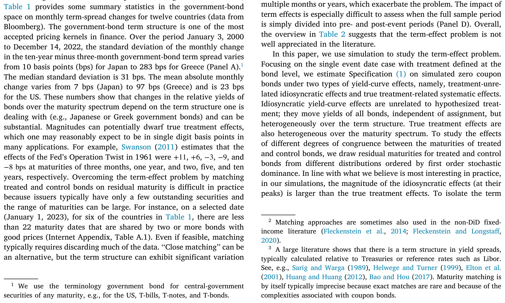
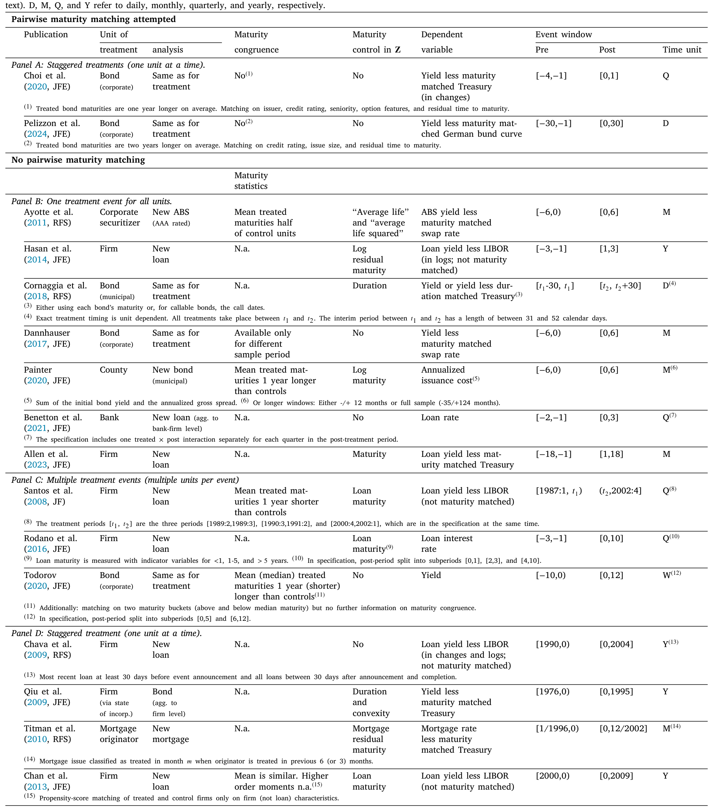
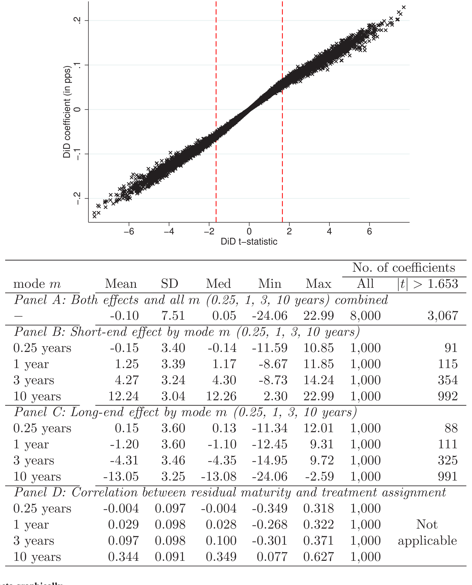
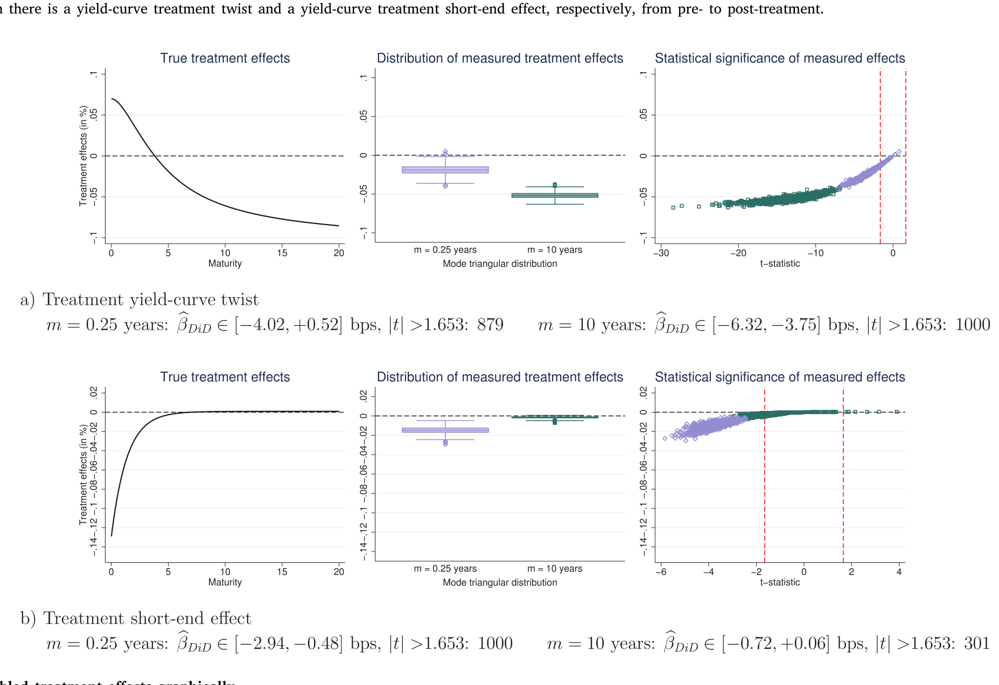
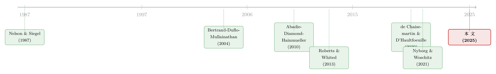

期限结构会自己动：当双重差分撞上一条收益率曲线
本文读的是 Nyborg & Woschitz (2025, Journal of Financial Economics)：当被解释变量带有「期限结构」（比如债券收益率）时，标准的双重差分 (difference-in-differences, DiD) 模型从一开始就被「设定错」了——哪怕处理是随机分配的，它也会量出一个根本不存在的处理效应，或者把真实效应搅成一团看不懂的东西。问题不出在数据脏，而出在期限结构每天都在自己动，而处理组和控制组的债券几乎永远没有在「剩余期限」上配平。作者用模拟把这个陷阱一步步逼了出来，并给出一个把债券固定效应换成「曲线」的解法。
1 引言：一个看不见的陷阱
做实证的人对双重差分大概都不陌生。它的逻辑朴素得近乎完美：找一组被「处理」的单位，找一组没被处理的「控制」单位，比较两组在事件前后变化的差，差里那块多出来的，就归因于处理。它被广泛用来对付内生性，因为只要处理组和控制组在没有处理时本会「平行」地走，那么事件前后的二阶差分就把所有共同冲击都减掉了。
在固定收益领域，这套做法尤其流行。一只债券的价格往往被反过来写成它的收益率 (yield) 或利差 (spread)，于是人们就跑这样一个再标准不过的回归：
$$yield_{it} = \alpha_i + \delta_t + \beta_{DiD}\, 1_{Treated,i}\times 1_{Post,t} + \Gamma' Z_{it} + \varepsilon_{it}$$
处理组债券在事件后多动的那一点，就被 \(\beta_{DiD}\) 捕捉。看起来无懈可击。
但本文的两位作者偏偏要在这块看似坚实的地基上敲一敲。他们的问题尖锐而朴素：收益率不是一个普通的变量，它带着一条期限结构 (term structure)。同一个发行人，三个月的利率、两年的利率、十年的利率不仅水平不同，而且每天都在以不同的幅度、甚至相反的方向各自移动。一旦被解释变量自带这样一条会扭动的曲线，上面那个 \(\beta_{DiD}\) 还测得准吗？
作者的回答是：测不准，而且错得相当离谱——即便在处理完全随机分配、数据没有任何测量误差的理想世界里。
2 期限结构会自己动
先把那个被敲响的地基拆开看。上面这条回归的每一块，作者都标了出来：
问题恰恰藏在 \(\alpha_i\) 里。证券固定效应假设：每只债券那部分「与处理无关」的效应是固定不变的。可现实里，一只债券与处理无关的那部分收益，取决于它当下的剩余期限 (residual maturity) 和整条期限结构当天的形状——而这两样东西都在动。随着事件窗口往前推，每只债券的剩余期限在缩短，它在曲线上的位置在滑动（作者称之为「曲线滚动效应」），这个滚动在期限谱上还是不均匀的。于是 \(\alpha_i\) 该吸收的东西根本不是常数。
首先，一个自然的问题是：这种「自己动」到底有多大？作者用 Bloomberg 的十二国政府债数据给了一个量级感。在 2000 年 1 月 3 日到 2022 年 12 月 14 日间，「十年减三月」期限利差的月度变化标准差，日本只有 10 bps，美国 30 bps，中位数 31 bps，而希腊高达 274 bps。即便把期限谱切成 2–3 年的窄段，剔除希腊后，标准差也从 9 bps（7y–5y）一路升到 33 bps（2y–3m）。更要命的是 Panel C：剔除希腊后，长端与短端利率在约 40% 的月份里朝相反方向移动——曲线不是平移，是在扭。

Table 1: provides some summary statistics in the government-bond
接着，把这个量级和真实的处理效应放在一起对比，张力就出来了。Swanson (2011) 估计 1961 年「扭转操作」(Operation Twist) 的效应在三月、一年、两年、五年、十年期上分别是 +11、+6、−3、−9、−8 bps。也就是说，人们关心的处理效应往往只是个位数 bps，而期限结构自己一个月的扭动就能轻松盖过它。信号比噪声还小，这本身就够危险了。
那为什么不干脆把处理组和控制组在剩余期限上「配平」？因为做不到。一个发行人通常只有寥寥几只在外债券，期限跨度却很大。作者举例：2023 年 1 月 1 日，表 1 里有六个国家，能找到两只以上「价格良好、期限相同」债券的到期日还不到 22 个。匹配在实践中要么不可行，要么得扔掉大半数据。于是处理组和控制组的剩余期限分布几乎永远对不齐——这意味着久期与处理虚拟变量之间存在非零相关，而这恰恰违反了 OLS 一致性所需要的零相关条件 (Roberts and Whited, 2013)。
直觉上人们会想：那我在 \(Z_{it}\) 里加一个期限控制不就行了？作者的回答是：不行，甚至更糟。无论是用债券固定效应（隐式地），还是用一条参数化的期限结构（显式地），它们都强行假设了处理组与控制组的收益率曲线在事件前后只发生平行移动。而真实世界里，无论是真效应还是与处理无关的扰动，都是沿期限谱异质的。把错误的平行假设硬塞进去，只会把偏误换个地方藏起来。
3 文献的集体盲区
然后，一个更扎心的问题是：这个「期限效应问题」，文献意识到了吗？
作者干了一件很笨但很有说服力的事——手工翻检 JF、JFE、RFS 三大刊，找出所有把 DiD 用在带期限结构变量上的论文，得到 21 篇。结论是：没有一篇估计了处理效应的期限结构。只有两篇尝试了对剩余期限的配对匹配，可即便如此，Pelizzon et al. (2024) 的处理组债券平均还是比控制组长 2 年，Choi et al. (2020) 长 1 年。15 篇在 \(Z\) 里放了某种期限控制——但如前所述，这并不能解决设定错误；10 篇改用「相对于期限匹配国债或货币市场利率的利差」，可利差本身照样带着一条期限结构。绝大多数论文还用了长达数月乃至数年的事件窗口，这只会让曲线滚动效应雪上加霜。

Table 2
一张表把整条文献的盲区摊开了：大家都在用同一个会出错的设定，却几乎没人去估计那个真正有经济含义的对象——处理效应沿期限谱长什么样。
（关于实证里「一根 t 值不该被直接当成因果」这件事，可参见《事件研究里的「假阳性」：当一根 t 值不再等于因果》，本文是这种警觉在固定收益场景下的一个更尖锐的版本。）
4 用模拟把「假效应」逼出来
但真正关键的一步，是作者怎么证明这套设定会出错。他们不靠真实数据（真实数据里你永远分不清测出来的是真效应还是偏误），而是用模拟——因为只有在模拟里，你才能亲手设定「真相」，再看回归吐出什么。
模拟的设计很干净。标的是零息债券 (zero coupon bond)，收益率无误差地生成。曲线上叠加两类效应：一类是与处理无关的特异性效应 (idiosyncratic effects)，它移动所有债券的收益率、与是否被处理无关，但在期限谱上是异质的；另一类是真实的、与处理相关的系统性效应，它同样沿期限谱异质。为了刻画处理组与控制组期限分布的「错配程度」，作者让两组的剩余期限服从不同的分布，并用一阶随机占优 (first-order stochastic dominance) 把这些分布排序——具体地，用一族众数 \(m\) 不同的三角分布来生成（见 Figure 1）。贴近现实地，他们让特异性效应在峰值处比真实处理效应更大。
于是反转出现了。先看最干净的极端情形：根本没有真实处理效应。按理说 \(\beta_{DiD}\) 应该是零。可结果是，只要处理组和控制组的剩余期限分布不完全相同，DiD 估计就是有偏的，第一类错误 (Type I error) 的发生率显著高于一个设定正确的模型。这些「假阳性」可正可负，而且即便在两组无条件期限分布完全相同（处理完全随机）时也可能在经济意义上很大。换句话说，随机分配根本救不了你。

Figure 3: False treatment effects graphically
再看另一个极端：只有真实处理效应、没有特异性扰动。这时 \(\beta_{DiD}\) 也不是没毛病——它只能返回处理组各期限上效应的一个「平均数」，把真正有意思的期限结构抹平了。如果真实效应是把处理组曲线一端往上扭、另一端往下压（一个 twist），那么平均下来甚至可能接近零，让你误以为「什么都没发生」。
5 当真效应被「搅乱」
现实当然介于两个极端之间：特异性扰动和真实效应同时存在。作者证明，此时经典 DiD 给出的，恰好是两个极端情形结果的相加。这就糟糕了——它把「凭空捏造的假效应」叠在「被抹平的真效应」之上，作者称之为「搅乱」(garbled) 的结果与推断。
最反直觉、也最让人脊背发凉的结论是：即便在随机分配下，当处理组样本债券上的平均真实效应为正时，你完全可能测出一个显著为负的处理效应，反之亦然。而这一切，都发生在收益率无测量误差、所有效应都精确生成的模拟里。处理组与控制组的期限分布差得越远，这种搅乱就越严重。

Figure 5: Garbled treatment effects graphically
到这里，本文的核心命题已经被钉死了：当被解释变量带有期限结构时，标准 DiD 不可靠。它的假阳性对不同的控制向量 \(Z\)、不同的实现方法都相当稳健——因为问题的根子是「期限结构的内生变动」与「剩余期限和处理分配之间的非零相关」这两者的组合，换个控制变量根本碰不到病灶。
作者还顺手把这个结论推广了一步：这并非 DiD 独有的毛病。在一个纯横截面的「分组—赋值」设定里，只要没有恰当地处理异质的期限效应，同样会冒出假的和被搅乱的效应。所以这是「组赋值」类问题的通病，DiD 只是其中最常见的一个面孔。
6 解药：把固定效应换成「曲线」
那怎么办？本文给的解法，思路上是一次漂亮的「错位」：既然 \(\alpha_i\) 这种固定效应是设定错误的元凶，那就别用它。
第一种方法专为零息债券（或任何能写成剩余期限函数的变量）设计，源自 Nyborg and Woschitz (2021)。它把债券固定效应和时间固定效应，替换成为控制组和处理组分别、且事件前后分别估计的参数化收益率曲线。处理效应不再是一个标量 \(\beta_{DiD}\)，而是一条 Delta 曲线——处理组与控制组在事件前后、沿整条期限谱的增量利差曲线。形式上它仍然「很像」一个标准 DiD，只不过是在曲线上做差分；而且方便的是，整条 Delta 曲线可以用一次普通回归、用标准软件估出来。曲线本身用 Nelson and Siegel (1987) 模型来拟合。这样一来，期限上异质的真实处理效应被识别出来，并与特异性扰动分离开——设定错误是通过「把处理效应的期限结构估出来」来解决的，而这恰恰也是经济上最值得知道的东西。剩余期限匹配得好不好，不再是问题。
第二种方法叫半合成匹配 (semi-synthetic matching)，分两步：先为每只处理组债券相对其「合成控制」算出个体 DiD，再把这些个体结果沿期限谱考察。对零息债券、当曲线用同一函数形式拟合时，两种方法等价；不同之处在于一步法的优势是允许对标准误做聚类。
一个常被忽视的副产品：作者指出，DiD 里那张用来检验平行趋势 (parallel trends)、看「排除约束」是否成立的趋势图，同样会被期限效应污染。除非处理组与控制组在剩余期限（和票息结构）上完美匹配，基于简单平均的趋势图就是误导性的。一个权宜之计是先在期限分桶内求平均、再跨桶求平均——但它有多管用，取决于桶内匹配得有多紧。
7 文献脉络
把这篇论文放回它所在的谱系里看，会更清楚它的位置。
一端是收益率曲线建模的工具传统：Nelson and Siegel (1987) 的简约模型给了人们一个用少数参数刻画整条期限结构的办法，这正是本文 Delta 曲线得以落地的技术基础。另一端是DiD 方法论的反思谱系：Bertrand, Duflo and Mullainathan (2004) 第一次系统地问「我们到底该多相信 DiD 的标准误」，Roberts and Whited (2013) 把 DiD 的识别假设（包括趋势图诊断）带进公司金融的方法论手册，而近年 de Chaisemartin and D'Haultfoeuille (2020)、Baker, Larcker and Wang (2022) 等掀起的「异质处理效应」浪潮，则反复提醒：当处理效应在单位之间不同质时，朴素的双向固定效应估计量会出问题。

本文恰好站在这两条线的交汇处。它接过「异质处理效应」的问题意识，却把异质性放到了一个全新的维度上——不是单位之间、也不是时间上的交错采纳，而是沿着期限谱的异质。它借来合成控制 (Abadie, Diamond and Hainmueller, 2010) 的精神，又直接生长自作者自己关于抵押品政策如何影响收益率曲线的工作 (Nyborg and Woschitz, 2021)。可以说，它是把「曲线建模」和「DiD 反思」缝在了一起。
8 评论与延伸（Q&A + 研究方向）
(a) 几个可能的疑问
Q：这跟「异质处理效应」文献（de Chaisemartin 那一支）是一回事吗？
不完全是。那一支主要担心的是交错采纳下，不同采纳时点、不同单位的效应不同质，导致双向固定效应把效应加权成奇怪的东西。本文谈的异质性是沿剩余期限这条连续维度展开的，而且即便只有单一事件日、处理在债券层面定义，问题照样存在。两者精神相通，但病灶不同：本文的根子是被解释变量自带一条会扭动的曲线。
Q：处理是随机分配的话，DiD 不就无偏了吗？
这正是本文最反直觉的点。随机分配只保证处理组与控制组剩余期限的无条件分布相同，但在任何一个具体样本里，两组的实现分布几乎不可能逐点对齐；而期限结构每天的扭动会把这点不对齐放大成可观、且符号依样本而定的假效应。随机性救了均值，救不了你手上这一个样本。
Q：把事件窗口缩短，能不能缓解？
能缓解，但治标不治本。长窗口确实更糟，因为曲线滚动效应随时间累积、且在期限谱上不均匀。但即便窗口很短，只要处理组与控制组期限错配、期限结构当期发生了扭动，偏误依然存在。本文的模拟里收益率无误差、效应无误差，问题仍在——说明它不是「窗口噪声」问题。
Q：Delta 曲线方法对票息债券也好用吗？
作者很诚实地承认：第一种方法是为零息债券（或值可写成剩余期限函数的变量）设计的，对票息债券或剩余期限与因变量关系更复杂的情形并不理想。这也是他们额外给出半合成匹配作为补充的原因。
Q：那已经发表的那 21 篇论文，结论都错了吗？
本文没有逐篇翻案，而是说它们的方法有系统性风险，结论的符号和量级可能不可靠、甚至依样本而定。这是一个关于「该用什么尺子」的警告，而不是对某个具体经济结论的证伪。要知道某篇结论是否站得住，得用稳健方法重做。
Q：这套批评只对债券收益率有效吗？
不止。作者明确指出，任何带期限结构的被解释变量都中招：信用利差、贷款利率、期权隐含波动率、期货价格、风险溢价等等。凡是「同一发行体在不同期限上各自移动」的变量，这套逻辑都适用。
(b) 几个可能的研究问题与提案
1. 用 Delta 曲线重估一个经典的公司债事件研究。 【经济故事】文献里大量「监管冲击 / 评级变动 / 流动性事件对公司债收益率的影响」用的都是标准 DiD。若处理效应其实是沿期限谱扭动的，重估可能不只是把估计变精确，而是改变结论的符号或政策含义。 【可行性】高。所需数据（TRACE 成交、Mergent FISD 债券特征）成熟，方法在本文里已经能用单次回归实现，难点在于把票息债券映射到零息曲线。
2. 把期限效应问题搬到「外资持有人 vs 本地持有人」的利差研究。 【经济故事】外资进出常被当作对某类债券的「处理」，进而看它对收益率/利差的影响。但外资偏好的债券在期限上往往系统性地不同于本地投资者持有的债券，这正是本文所说的「期限错配」温床。 【可行性】中。需要持有人层面数据（如 TIC、ECB SHS、或国别托管数据）与债券期限信息匹配；识别上要论证外资冲击的外生性，本文方法可作为稳健性主力。
3. 信用利差期限结构上的「便利收益」处理效应。 【经济故事】绿色国债、抵押品合格性等政策往往被认为只动某段期限。用 Delta 曲线直接把「处理效应曲线」估出来，可能揭示便利收益是被压在短端还是长端，而这是标量 DiD 永远看不到的。（这与《绿色溢价真的归零了吗？——藏在德国孪生国债里的两种「便利收益」》里对孪生国债利差的关切高度互补。） 【可行性】中到高。德国孪生债、各国绿债数据可得，零息曲线拟合是标准操作。
4. 给现有的 21 篇文献做一次系统性「敏感度普查」。 【经济故事】本文已经手工建好了那张文献清单。下一步是量化：在多大的期限错配下，每篇的结论会翻转？这能把「方法警告」变成「可量化的结论稳健性图谱」。 【可行性】中。需要复刻各篇的样本与设定，工作量大但概念清晰，本文的模拟框架提供了现成脚手架。
5. 把期限效应问题推广到「久期错配」的股票/债券对比研究。 【经济故事】既然本文说这是「组赋值」类设定的通病，那么把股票按久期分组、与同久期债券对比的那类研究是否也中招？ 【可行性】中。可借鉴本文横截面推广的框架；相关久期度量的讨论可参《久期错配：当我们把股票和「同样年限」的债券放在一起比》。难点在于股票久期本身难测，识别上要更小心。
最后说说我的判断。
贡献上，这篇论文做了一件少见的「负面+建设性」工作：它没有止于「你们都错了」，而是先用一个无测量误差的模拟把错误的机制逐层逼出来（假阳性 → 真效应被抹平 → 两者叠加成搅乱），再给出一个能用一次回归实现、且把「处理效应的期限结构」直接估成 Delta 曲线的解法。它把一个被整条文献忽视的设定错误，变成了一个既可诊断、又可修复的具体问题。对任何在收益率/利差上跑 DiD 的人，这都是必读的方法论警告。
对识别的担忧有两点。其一，全部火力建立在模拟之上——这是它论证「即便理想世界也会出错」的力量所在，但也意味着我们看到的是「设定错误」的纯净版本，真实数据里它与测量误差、流动性噪声如何纠缠，仍待更多实证标定。其二，解法的核心优势局限在零息债券上；对占据公司债市场主体的票息债券，半合成匹配虽是出路，但「合成控制曲线」本身的估计误差会传导进 Delta 曲线，这条不确定性链条值得更细的刻画。
后续我最想看到的，是有人拿本文清单里那几篇高引用的公司债 DiD，老老实实用 Delta 曲线重做一遍——看看当我们把那条被压扁的期限维度重新展开后，是结论更稳了，还是某个符号悄悄翻了过去。那一刻，才是这篇方法论论文真正的「处理效应」。
参考文献
Abadie, A., Diamond, A., Hainmueller, J. (2010). Synthetic control methods for comparative case studies: Estimating the effect of California's tobacco control program. Journal of the American Statistical Association 105, 493–505.
Alon, T., Swanson, E. (2011). Operation twist and the effect of large-scale asset purchases. FRBSF Economic Letter.
Baker, A.C., Larcker, D.F., Wang, C.C.Y. (2022). How much should we trust staggered difference-in-differences estimates? Journal of Financial Economics 144, 370–395.
Bertrand, M., Duflo, E., Mullainathan, S. (2004). How much should we trust differences-in-differences estimates? Quarterly Journal of Economics 119, 249–275.
Choi, J., Hoseinzade, S., Shin, S.S., Tehranian, H. (2020). Corporate bond mutual funds and asset fire sales. Journal of Financial Economics 138, 432–457.
de Chaisemartin, C., D'Haultfoeuille, X. (2020). Two-way fixed effects estimators with heterogeneous treatment effects. American Economic Review 110, 2964–2996.
Nelson, C.R., Siegel, A.F. (1987). Parsimonious modeling of yield curves. Journal of Business 60, 473–489.
Nyborg, K.G., Woschitz, J. (2021). The price of money: How collateral policy affects the yield curve. Working paper.
Nyborg, K.G., Woschitz, J. (2025). Robust difference-in-differences analysis when there is a term structure. Journal of Financial Economics 170, 104081.
Pelizzon, L., Riedel, M., Simon, Z., Subrahmanyam, M.G. (2024). Collateral eligibility of corporate debt in the Eurosystem. Journal of Financial Economics 153, 103777.
Roberts, M.R., Whited, T.M. (2013). Endogeneity in empirical corporate finance. In: Constantinides, G.M., Harris, M., Stulz, R.M. (Eds.), Handbook of the Economics of Finance Vol. 2, Elsevier, pp. 493–572.